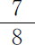
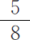

主要鸽族的历史[1]
在讨论主要鸽族的形成的途径和步骤以前，稍微谈一谈它们的历史细节是有好处的，因为我们所知道的鸽子历史虽然不多，但所知道的比其他家养动物的历史还要多一些。有些例子是有趣的，因为它们证实了家养变种可以在多么长久的期间内以完全一样的或者几乎一样的性状来繁育；还有一些其他更加有趣的例子，因为它们阐明了鸽族在连续的世代中曾经多么缓慢地、但稳定地发生了巨大的变异。我在上一章叙述过，在鸣声方面非常值得注意的喇叭鸽和笑鸽似乎在1735年就已经完全具有这种特征了；而笑鸽在印度显然于1600年以前就被知道了。斑点鸽在1678年，尼鸽在阿尔祝万狄的时代，即在1600年以前，已经具有同现在完全一样的颜色了。在印度普通翻飞鸽和地面翻飞鸽于1600年以前已经呈现了同今天一样的异常飞翔特性。因为在一种阿拉伯文古书（Ayeen Akbery）中对于这样的特征有过很好的描述。这些品种的存在时间可能比此还要悠久；不过我们只知道它们在上述期间已经完全具有那样的特性了。家鸽的平均寿命大概为五、六年；如果是这样的话，那么在这些族中有些已经完善地把它们的性状至少保持到四五十代了。
突胸鸽 这种鸽子按照很短的记载所能提出的比较来说，大概在阿尔祝万狄的时代[2]，即在1600年以前，已经完善地具有这样的特征了。体长和腿长在今天是两个最主要的优点。第一流的养鸽者慕尔于1735年说道（参阅伊顿先生编的版本），他有一次看到一只鸽子的体长达20英寸，“虽然17英寸或18英寸已经被承认是很好的长度了”；并且他曾看见过腿长有接近7英寸的，然而腿长达到6.5英寸或6.75英寸的，“一定就会被认为是很优良的个体了”。全世界最成功的突胸鸽育种者布尔特先生告诉我说，现在（1858年）的体长标准不小于18英寸；但是他曾测计过一只鸽子，其体长为19英寸，并且他还听到过有达20英寸和22英寸的，不过他怀疑后一说法的正确性。现在的腿长标准为7英寸，但是布尔特先生最近在他所拥有的鸽子中测计过两只、其腿长为7.5英寸。所以自从1735年以后，经过了123年，在体长的标准上几乎没有任何增加；17英寸和18英寸在以前被承认是很好的长度，现在18英寸是最低的标准；不过腿长似乎增加了，因为慕尔从来没有看见过有足够7英寸长的；现在腿长的标准7英寸，在布尔特先生的鸽子中有两只的腿长为7.5时。在晚近123年以来，突胸鸽除了腿长以外改进得极其微小；正如布尔特先生告诉我的那样，这可能是部分地由于直到最近二三十年以前它们并没有受到注意的关系。约在1765年[3]，时尚有所改变，细而接近裸出的腿不如粗大而多具羽毛的腿时兴了。
扇尾鸽 在那种阿拉伯文古书（Ayeen Akbery）中指出[4]，最初注意到这个品种的存在的是在印度，这是1600年以前的事情了；根据阿尔祝万狄的判断，这个时期在欧洲还不知道有这个品种。1677年威尔比谈过有一只扇尾鸽具有26支尾羽；1735年慕尔看到过一只具有36支尾羽；1824年包依塔和考尔比确言具有42支尾羽的鸽子可以容易地在法国找到。在英国，现在对尾羽的数目并不如对尾的向上方位和开张程度那样地重视了。同样的，鸽子的一般步态现在也是非常受到重视的。古文献对于后述各点是否有过巨大改进所作的描述是不够充分的：但是，像现在那样的头尾可以相触的扇尾鸽如果在以前曾经存在过，那么这一事实几乎肯定是会被注意到的。有关步态这一点，现在的印度扇尾鸽大概示明了该族被引进到欧洲时的状态；我养过一些扇尾鸽，据说是从加尔哥答带来的，它们的步态显著地比我们展出的鸽子的步态为劣。爪哇扇尾鸽在步态方面表现了同样的差异；斯温赫先生虽然在他的鸽子中看到过具有18支和24支尾羽的，但是他送给我的一个第一流标本只有14支尾羽。
毛领鸽 这个品种在1600年以前就存在了，不过从阿尔祝万狄发表的绘图来判断，它的头巾状羽毛并不像现在那样地几乎完全把头部都遮盖住了：那时的头部并不是白色的；而且翅和尾也不像现在那样的长，不过后一性状可能是被粗心的绘图者忽略了。在1735年慕尔的时代，毛领鸽被认为是鸽中最小的一个种类，并且据说它们的喙是很短的。因此，毛领鸽以及当时同毛领鸽作比较的其他种类自从1735年以后一定相当地被改变了；为什么这样说呢，因为慕尔（必须记住他是第一流的判断者）的描述，就体长和喙长来说，显然同现在毛领鸽的情况不相符合。根据贝西斯坦的材料来判断，这个品种在1795年就已经获得了今天这样的性状。
浮羽鸽 关于鸽子的古代作者一般都设想浮羽鸽就是阿尔祝万狄所谓的科特贝克鸽（Cortbeck）；但是，如果是这样的话，它们特有的颈羽未曾被注意到，却是一个异常的事实。再者，科特贝克鸽的喙被描述得同毛领鸽的喙密切相似，这表明了其中有一个族的喙已经发生了变化。威尔比在1677年曾描述过浮羽鸽，当时它已生着特有的颈羽，并且有着同现在一样的名字；据说它的喙像鹭的喙——这是一个适当的比较，不过现在它更严格地同排孛鸽的喙相像。一个叫做鸮鸽的亚品种在1735年的慕尔时代已被熟知了。
翻飞鸽 只就翻筋斗这一点来说，1600年以前在印度就有完善的普通翻飞鸽和地面翻飞鸽了；这一时期在印度似乎已经像现在那样地非常注意种种不同的飞翔方式了，例如夜间飞翔，高空飞翔，以及下降的方式。1555年贝隆（Belon）[5]在帕夫拉哥尼亚（Paphlagonia）看见过他所描述的以下情形，“这是一件很新鲜的事情：鸽子在空中飞得如此之高，以致达到看不见它们的程度，但是它们还可以不离散地返归鸽舍”。这就是我们现在的翻飞鸽所特有的飞翔方式，不过他所描述的鸽子如果会翻筋斗。显然他会对这种动作加以描述的。1600年，在欧洲还不知道翻飞鸽，因为讨论过鸽子翻飞的阿尔祝万狄并没有提到过它们。1687年威尔比大略地谈到过翻飞鸽，他说这是一种小型的鸽子，“在空中表现得和足球一般”。这一时期还没有短面的族，因为威尔比不会忽略了体部如此显著小的、喙如此显著短的鸽子。我们甚至能够追踪产生这个族所经过的一些步骤。1735年慕尔正确地举出了他们的主要优点，但是对于几个亚品种并没有做过任何描述；伊顿先生根据这一事实推论[6]短面翻飞鸽在那时还没有达到充分完善化的地步。慕尔甚至谈到过毛领鸽是一种最小的鸽子。30年以后，即1765年，在献给梅耶尔（Mayer）的一篇论文中对于短面扁桃翻飞鸽已经作了充分的描述，不过该文作者，一位最优秀的养鸽者，在序言中明确地说道（第14页）：“由于在繁育它们的时候花了很大的心思和费用，它们已经达到了如此非常完善的地步，并且同它们二三十年以前的情形如此不同，以致守旧的养鸽者会非难它们，这不是为了别的原因，而只是为了它们同以往时尚中所惯于被认为优良的鸽子不相像了。”因此，在这一时期左右，“短面翻飞鸽”的性状大概发生了一种颇为急骤的变化；而且有理由可以推测，一种矮小的和半畸形的鸽子，即若干短面亚品种的亲类型在那时出现了。我之所以如此推测，是因为短面翻飞鸽按照它们的体部大小的比例来说，生下来就具有成体那样短的喙（经过细心的测计而确定下来的）；关于这一点，它们和所有其他品种都大不相同，因为后者是在成长期间缓慢地获得了它们种种不同的特有性质的。
自从1765年以后，短面翻飞鸽的主要性状之一，即喙的长度发生了某种变化。养鸽者从喙的尖端到眼球的前缘来测计它们的“头和喙”。约在1765年左右，“头和喙”按照普通方法来测计如果达到

英寸长，就被认为是优良的[7]；现在则不应超过
英寸；然而像伊顿先生坦白说到的那样，“甚至达到0.75英寸长，这只鸽子也会被认为是可爱的或端正的，但是超过了这个长度，它一定会被认为是不值得注意的了”。伊顿先生说，在他的一生中看到“头和喙”的长度不超过半英寸的，也不过两三只；“我还相信经过几年之后，头和喙的长度将会缩短，而且头和喙的长度为半英寸的鸽子就不会像今天这样地被看成是一种莫大的珍奇物了”。如果考虑到伊顿先生在我们的展览会中获得了奖励，那么他的这种意见无疑是值得注意的。最后，根据以上的事实，对于翻飞鸽可以作出这样的结论：它最初是由东方引进到欧洲的，而且大概是先引进到英国的；那时它同英国的普通翻飞鸽相似，或者更可能同波斯翻飞鸽或印度翻飞鸽相似，它的喙比普通鹁鸽的喙刚刚短到可以觉察的程度。关于短面翻飞鸽，在东方还不知道有它的存在，在它的头、喙、体、腿的大小方面以及在一般步态方面所发生的可惊的全体变化，几乎无可怀疑的是由于在最近两个世纪中所进行的不断的选择，大概还有1750年左右在某处产生出来的一只半畸形鸽子的帮助。侏儒鸽 关于它的历史，能够谈的很少。在普林尼的时代，据知坎佩尼亚（Campania）的鸽子是最大型的；某些作者仅根据这一事实就确言它们是侏儒鸽。在1600年阿尔祝万狄的时代，有两个亚品种存在，不过其中一个品种现今在欧洲已经灭绝了。
排孛鸽 尽管有相反的议论，不过在我看来，要从阿尔祝万狄的描述和绘图中鉴定出排孛鸽是不可能的；然而在1600年已经有四个品种显然同排孛鸽和信鸽相似了。为了阐明要鉴定阿尔祝万狄所描述的某些品种是多么困难，我将对于上述的四个种类，即印度鸽（C．indica），克里特鸽（Cretensis），蔷薇色细颈鸽（gutturosa），波斯鸽（Persica），提出不同的意见，威尔比认为印度鸽是一种浮羽鸽，但卓越的养鸽者勃连特先生却认为它们是一种劣等的排孛鸽。关于具有短喙并在上颌具有肉瘤的克里特鸽无法作出鉴定。蔷薇色细颈鸽（命名有误）由于喙短而粗并且生有肉瘤，所以在我看来，它同排孛鸽极接近，但是勃连特先生相信它是一种信鸽；最后，关于波斯鸽，勃连特先生认为它们是一种稍具肉垂的短喙信鸽，我十分同意他的意见。1667年在英国就知道排孛鸽了，威尔比描述过它的喙同浮羽鸽的喙相似；但是不能相信他的排孛鸽具有现今英国排孛鸽那样的喙，因为如此精确的一位观察者不会忽略了它的巨大宽度。
英国信鸽 我们在阿尔祝万狄的著作中找不到任何鸽子同我们获奖的信鸽相似；这位作者所谓的波斯鸽是最接近信鸽的，不过据说它有一个短而粗的喙；所以它的性状一定接近排孛鸽，而同我们的信鸽大不相同。在1677年威尔比的时代，我们可以清楚地辨认信鸽，然而他又说，“喙并不短，并且中等长”；谁也不会把这一描述应用在现今的英国信鸽身上，因为后者有如此显著的特别长的喙。在欧洲给信鸽超过的旧名字以及现今在印度所使用的几个名字都指出了信鸽最初是来自波斯的；威尔比的描述完全可以应用于现今在马得拉斯生存的布梭拉信鸽。晚近我们已经可以在英国信鸽中部分地追踪它们的变化过程了：慕尔在1735年说道：“虽然很优良的信鸽的喙没有超过1.25英寸的，但是1.5英寸的喙才被认为是长的。”这等鸽子一定同上述的现今生存于波斯的信鸽相似，或者比它们稍微优越一点。像伊顿先生[8]所说的那样，今天在英国“有的喙已经达到1.75英寸长（从眼边到喙端），少数的喙甚至达到了二英寸长。”
根据这些历史材料，我们知道几乎所有的主要家养族在1600年以前就存在了。仅以颜色为特征的鸽子似乎同现在的品种是一样的，有些是几乎一样的，有些是相当不同的，有些是后来灭绝了。像芬尼金鸽、旋转鸽、贝西斯坦命名的燕鸽以及卡姆赖特鸽（Carmelite）那样的几个品种似乎在这同一时期内发生了而且消灭了。今天访问了一座内容丰富的英国鸽舍的任何一个人大概都会肯定地把下述的鸽子作为最不同种类挑选出来的，这些鸽子是：粗壮的侏儒鸽，具有可惊的长喙和巨大肉垂的信鸽，具有短而宽的喙和眼睛周围的肉垂的排孛鸽，具有圆锥形小喙的短面翻飞鸽，具有大嗉囊、长腿和修长体部的突胸鸽，具有向上的、广阔开张的和多羽的尾部的扇尾鸽，具有褶边状颈羽和短而钝的喙的浮羽鸽，具有头巾状羽毛的毛领鸽。如果同一个人能够看到1600年以前亚格伯汗在印度饲养的鸽子和阿尔祝万狄在欧洲饲养的鸽子，那么他大概会看到：毛领鸽，它们具有比较不完善的头巾状羽毛；浮羽鸽，它们显然没有褶边状的颈羽；突胸鸽，它们具有比较短的腿以及各种比较不显著的性状（这就是说，阿尔祝万狄的突胸鸽如果同以往的德国种类相似的话）；扇尾鸽，它们在外貌上远不如今天那样地奇特，同时它们的尾羽也远不如今天那样地多；他大概会看到非常善于飞翔的翻飞鸽，但他不会找到奇异的短面翻飞鸽；他大概会看到同排孛鸽近似的鸽子，但他所遇到的是不是我们的真正排孛鸽，却极其值得怀疑；最后，他大概还会发现那时信鸽的喙和肉垂在发达上简直无法和英国信鸽的相比。他可能像今天一样地把大多数的品种分类在同样的群中；但是这些群间的差异远不如今天那样强烈地显著。总之，在这样早的时期，若干品种同它们的原始共同祖先、即野生岩鸽的分歧还没有达到今天这样巨大的程度。
[1] 在下文我常常说到“现在”，所以我应当指出本章是在1858年完成的。
[2] 《鸟类学》，1600年，第二卷，第360页。
[3] 《关于家鸽的一篇论文》（A Treatise on Domestic Pigeons），献给梅耶尔先生的，1765年，序言，第14页。
[4] 勃里斯先生翻译过“Ayeen Akbery”的一部分，发表于《博物学杂志》，第十九卷，1847年，第104页。
[5] 《鸟类志》（L’ Histoire de la Nature des Oiseaux），第314页。
[6] 《鸽论》，1852年，第64页。
[7] 伊顿：《论扁桃翻飞鸽的繁育和管理》（Treatise on the Breeding and Managing of the Almond Tumbler），1851年。请把序言第5页和本文第9，32页比较一下。
[8] 《鸽论》，1852年，第41页。